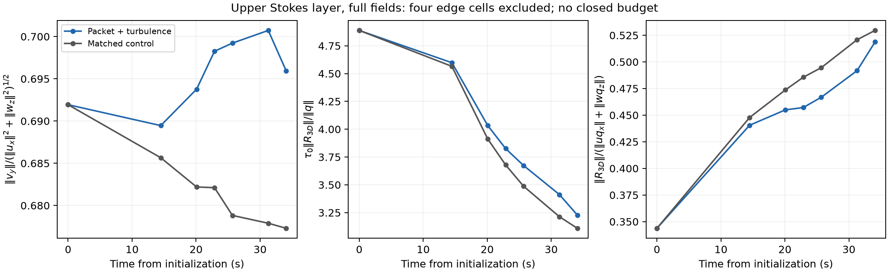

Seven matched wave/no-wave pairs, with the full coherent current retained. The analysis tests the three-dimensional corrections to scalar vorticity transport.
Both derivative stencils exclude the same four cells at each vertical boundary. Native full-grid incompressibility is checked separately. Local packet-age bins and all component norms are in the tables.

Ratios (CSV) · All term norms (CSV) · Definitions · Methods · Provenance
A small geometrical correction does not by itself establish material conservation: saved snapshots do not close a temporal budget or measure implicit numerical dissipation. Two stencil widths test derivative sensitivity, not simulation convergence.